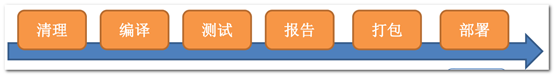
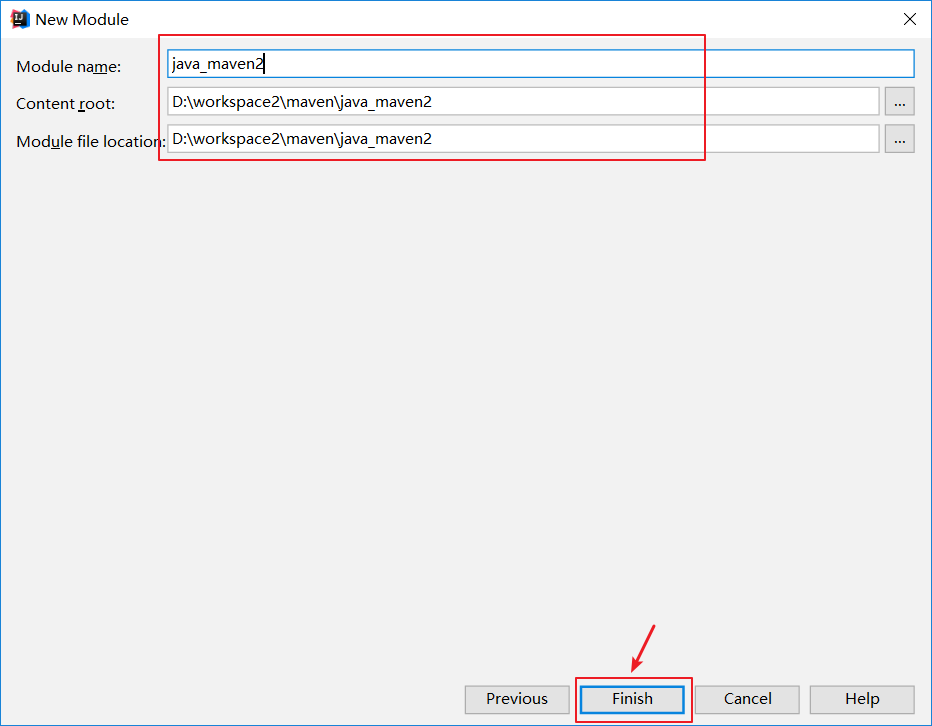
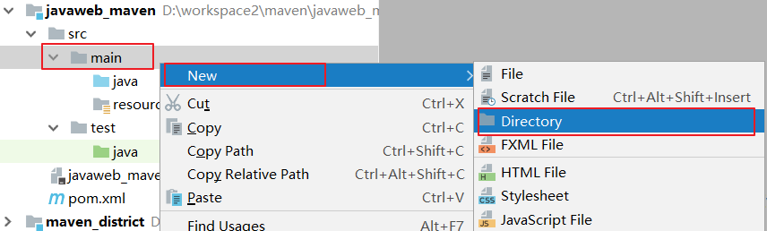
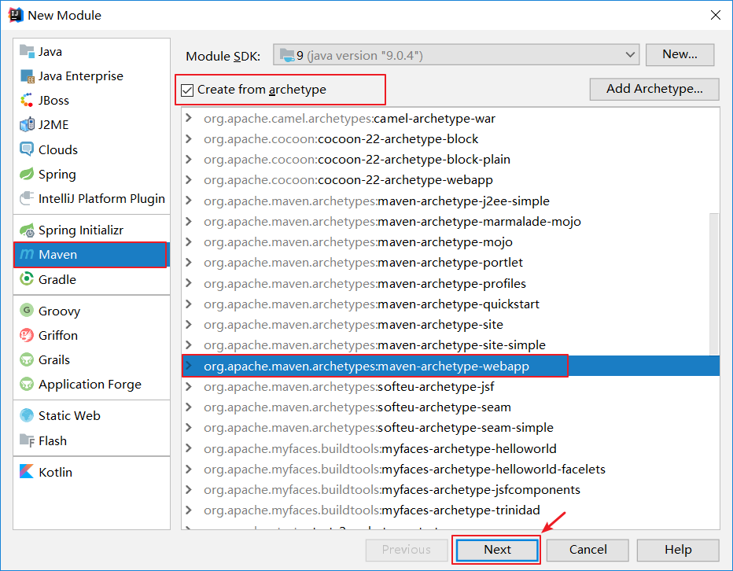

02-Maven基础一. 今日目标二. 今日内容(一) Maven概述1. 项目开发中的问题2. Maven概念模型3. Maven仓库4. Maven安装与配置下载安装Maven下载Maven安装环境变量配置Maven软件版本测试本地仓库配置(二) Maven管理项目生命周期1. Maven项目生命周期生命周期clean生命周期default生命周期site2. Maven项目的目录结构3. Maven项目生命周期clean生命周期default生命周期site生命周期4. Maven常用命令clean命令test命令compile命令package命令install命令(三) Idea中使用Maven1. 在Idea中配置Maven2. 创建JAVA工程不使用骨架创建使用骨架创建3. 创建WEB工程不使用骨架创建使用骨架创建(四) Maven依赖管理1. 坐标管理2. 查找坐标方法一：使用网站搜索方法二:根据关键字,使用idea提示功能自动补全(需要仓库中已经有jar包)(五) Maven插件配置1. Tomcat插件2. 编译插件
02-Maven基础
一. 今日目标
- 理解Maven简介
- 能够配置Maven环境
- 掌握Maven的一些常用操作
- 掌握Maven工程的创建
- 掌握依赖管理相关知识点
二. 今日内容
(一) Maven概述
1. 项目开发中的问题
x问题1：开发人员将功能开发完成，编译、打包、运行正常，而后提交svn，测试人员从svn获取代码后编译、打包、运行报错。解决方案：maven对项目生命周期进行定义，规范，开发人员和测试人员使用maven软件完成构建。问题2：一个项目工程中时间长了开发人员也搞不清楚项目中的某些jar的作用，用在哪些模块，不得不每过一段时间对每个jar包梳理一遍。解决方案：maven提供对项目依赖的第三方构件统一管理，通过规范的依赖管理来管理依赖的jar包。问题3：项目使用的第三方框架要升级，从第三方框架官方网站下载jar包，加入工程，运行后报错，原来是第三方框架依赖的jar版本冲突了。解决方案：maven提供对项目依赖的第三方构件统一管理，通过规范的依赖管理来管理依赖的jar包的版本。问题4：项目的模块很多，每次启动项目需要从svn获取全部模块的项目代码编译运行，由于工程大项目启动慢，工作效率低下。解决方案：maven对每个模块构建成一个一个独立的工程，每个模块构建成功将打成 jar包发布到maven远程仓库，工程师每次运行工程只需要从仓库下载模块jar包即可不用对全部源代码进行编译。问题5：项目组编写了一个通用的工具类，其它项目组将类拷贝过去使用，工具类发现bug修改后，通过邮件将工具类发送给各各项目组，这不是一个好的分发机制，太多的环节可能导致出现bug。解决方案：项目组将写的工具类通过maven构建，打成jar，将jar包发布到公司的maven仓库中，公司其它项目通过maven依赖管理从仓库自动下载jar包。
2. Maven概念模型
xxxxxxxxxxMaven是Apache下的一个开源项目，它是一个项目管理工具，它用于对java项目进行项目构建、依赖管理及项目信息管理。当前使用Maven的项目在持续增长。Maven包含了一个项目对象模型 (Project Object Model)，一组标准集合，一个项目生命周期(Project Lifecycle)，一个依赖管理系统(Dependency Management System)，和用来运行定义在生命周期阶段(phase)中插件(plugin)目标(goal)的逻辑。
xxxxxxxxxx1. 项目对象模型 (Project Object Model)通过pom.xml定义项目的坐标、项目依赖、项目信息、插件目标等。2. 依赖管理系统(Dependency Management System)通过定义项目所依赖组件的坐标由maven进行依赖管理。比如：项目依赖struts2.3.24，通过在pom.xml中定义依赖即可将struts2的jar包自动加入工程：pom.xml中定义依赖如下：<dependency><groupId>org.apache.struts</groupId><artifactId>struts2-core</artifactId><version>2.3.24</version></dependency>
xxxxxxxxxx3. 一个项目生命周期(Project Lifecycle)一个软件开发人员每天都在完成项目的生命周期：清理、编译、测试、部署，有的手工完成，有的通过Ant（也是一个项目构建工具）脚本自动完成，Maven将项目生命周期抽象统一为：清理、初始化、编译、测试、报告 、打包、部署、站点生成等。maven就是要保证一致的项目构建流程，通过执行一些简单命令即可实现上边生命周期的各各过程。

xxxxxxxxxx4. 一组标准集合maven将整个项目管理过程定义一组标准，比如：通过maven构建工程有标准的目录结构，有标准的生命周期阶段、依赖管理有标准的坐标定义等。5. 插件(plugin)目标(goal)maven 管理项目生命周期过程都是基于插件完成的。
3. Maven仓库
xxxxxxxxxxmaven工作需要配置仓库，本地的项目A、项目B等通过maven从远程仓库（可以理解为互联网上的仓库）下载jar包并存在本地仓库，本地仓库 就是本地文件夹，当第二次需要此jar包时则不再从远程仓库下载，因为本地仓库已经存在了，可以将本地仓库理解为缓存，有了本地仓库就不用每次从远程仓库下载了。下图描述了maven中仓库的类型：
xxxxxxxxxx1. 本地仓库 ：用来存储从远程仓库或中央仓库下载的插件和jar包，项目使用一些插件或jar包，优先从本地仓库查找2. 远程仓库：如果本地需要插件或者jar包，本地仓库没有，默认去远程仓库下载。3. 中央仓库 ：在maven环境内部内置一个远程仓库地址`http://repo1.maven.org/maven2` ，它是中央仓库，服务于整个互联网，它是由Maven自己维护，里面有大量的常用类库，并包含了世界上大部分流行的开源项目构件。本地仓库没有的jar包Maven默认从中央仓库下载。
4. Maven安装与配置
下载安装
Maven下载
为了使用Maven管理工具，我们首先要到官网去下载它的安装软件。通过百度搜索“Maven“如下：
点击Download链接，就可以直接进入到Maven软件的下载页面
目前最新版是apache-maven-3.5.3版本，我们当时使用的是apache-maven-3.5.2版本，大家也可以下载最新版本。 Apache-maven-3.5.2下载地址：http://archive.apache.org/dist/maven/maven-3/ 下载后的版本如下:
Maven安装
Maven下载后，将Maven解压到一个没有中文``没有空格``没有特殊字符的路径下，比如D:\work\下面。
解压后目录结构如下：
xxxxxxxxxxbin:存放了maven的命令，比如我们前面用到的mvn tomcat:runboot:存放了一些maven本身的引导程序，如类加载器等conf:存放了maven的一些配置文件，如setting.xml文件lib:存放了maven本身运行所需的一些jar包至此我们的maven软件就可以使用了，前提是你的电脑上之前已经安装并配置好了JDK。
环境变量配置
配置 MAVEN_HOME ，变量值就是你的maven安装 的路径（bin目录之前一级目录）
上面配置了我们的Maven软件，注意这个目录就是之前你解压maven的压缩文件包在的的目录，最好不要有中文和空格。
注意:Maven的运行依赖于JDK,所以在使用Maven之前需要检查JDK的环境变量是否配置了
Maven软件版本测试
通过 mvn -v命令检查 maven是否安装成功，看到maven的版本为3.5.2及java版本为1.8即为安装成功。 找开cmd命令，输入mvn –v命令，如下图：
本地仓库配置
本地仓库是用来存放联网下载maven的插件和jar包，maven本地仓库有的jar不再从互联网下载，所以本地仓库相当于一个缓存。 默认本地仓库位置在 ${user.dir}/.m2/repository，${user.dir}表示windows用户目录，如下
我们可以通过配置修改Maven仓库的位置,在maven/conf/settings.xml中添加配置
(二) Maven管理项目生命周期
Maven有三套相互独立的生命周期，请注意这里说的是“三套”，而且“相互独立”，这三套生命周期分别是：
xxxxxxxxxxClean Lifecycle 在进行真正的构建之前进行一些清理工作。Default Lifecycle 构建的核心部分，编译，测试，打包，部署等等。Site Lifecycle 生成项目报告，站点，发布站点。
1. Maven项目生命周期
生命周期clean
clean生命周期每套生命周期都由一组阶段(Phase)组成，我们平时在命令行输入的命令总会对应于一个特定的阶段。比如，运行mvn clean ，这个的clean是Clean生命周期的一个阶段。有Clean生命周期，也有clean阶段。Clean生命周期一共包含了三个阶段：
xxxxxxxxxxpre-clean 执行一些需要在clean之前完成的工作clean 移除所有上一次构建生成的文件post-clean 执行一些需要在clean之后立刻完成的工作mvn clean 中的clean就是上面的clean，在一个生命周期中，运行某个阶段的时候，它之前的所有阶段都会被运行，也就是说，mvn clean 等同于 mvn pre-clean clean ，如果我们运行 mvn post-clean ，那么 pre-clean，clean 都会被运行。这是Maven很重要的一个规则，可以大大简化命令行的输入。
生命周期default
Default生命周期Default生命周期是Maven生命周期中最重要的一个，绝大部分工作都发生在这个生命周期中：
xxxxxxxxxxvalidategenerate-sourcesprocess-sourcesgenerate-resourcesprocess-resources 复制并处理资源文件，至目标目录，准备打包。compile 编译项目的源代码。process-classesgenerate-test-sourcesprocess-test-sourcesgenerate-test-resourcesprocess-test-resources 复制并处理资源文件，至目标测试目录。test-compile 编译测试源代码。process-test-classestest 使用合适的单元测试框架运行测试。这些测试代码不会被打包或部署。prepare-packagepackage 接受编译好的代码，打包成可发布的格式，如 JAR 。pre-integration-testintegration-testpost-integration-testverifyinstall 将包安装至本地仓库，以让其它项目依赖。deploy 将最终的包复制到远程的仓库，以让其它开发人员与项目共享。
生命周期site
xxxxxxxxxxpre-site 执行一些需要在生成站点文档之前完成的工作site 生成项目的站点文档post-site 执行一些需要在生成站点文档之后完成的工作，并且为部署做准备site-deploy 将生成的站点文档部署到特定的服务器上这里经常用到的是site阶段和site-deploy阶段，用以生成和发布Maven站点，这可是Maven相当强大的功能，Manager比较喜欢，文档及统计数据自动生成，很好看。
2. Maven项目的目录结构
作为一个maven工程，它的src目录和pom.xml是必备的。
进入src目录后，我们发现它里面的目录结构如下：
xxxxxxxxxxsrc/main/java —— 存放项目的.java文件src/main/resources —— 存放项目资源文件，如spring, hibernate配置文件src/test/java —— 存放所有单元测试.java文件，如JUnit测试类src/test/resources —— 测试资源文件target —— 项目输出位置，编译后的class文件会输出到此目录pom.xml——maven项目核心配置文件注意：如果是普通的java项目，那么就没有webapp目录。
3. Maven项目生命周期
clean生命周期
clean生命周期每套生命周期都由一组阶段(Phase)组成，我们平时在命令行输入的命令总会对应于一个特定的阶段。比如，运行mvn clean ，这个的clean是Clean生命周期的一个阶段。有Clean生命周期，也有clean阶段。Clean生命周期一共包含了三个阶段：
xxxxxxxxxxclean 移除所有上一次构建生成的文件
default生命周期
Default生命周期Default生命周期是Maven生命周期中最重要的一个，绝大部分工作都发生在这个生命周期中：
xxxxxxxxxxcompile 编译项目的源代码。test 使用合适的单元测试框架运行测试。这些测试代码不会被打包或部署。package 接受编译好的代码，打包成可发布的格式，如 JAR 。install 将包安装至本地仓库，以让其它项目依赖。deploy 将最终的包复制到远程的仓库，以让其它开发人员与项目共享。
site生命周期
xxxxxxxxxxsite 生成项目的站点文档site-deploy 将生成的站点文档部署到特定的服务器上
4. Maven常用命令
clean命令
clean是maven工程的清理命令，执行 clean会删除target目录及内容。
test命令
test是maven工程的测试命令 mvn test，会执行src/test/java下的单元测试类。
cmd执行mvn test执行src/test/java下单元测试类，下图为测试结果，运行1个测试用例，全部成功。
compile命令
compile是maven工程的编译命令，作用是将src/main/java下的文件编译为class文件输出到target目录下。
cmd进入命令状态，执行mvn compile，如下图提示成功：
查看 target目录，class文件已生成，编译完成。
package命令
package是maven工程的打包命令，对于java工程执行package打成jar包，对于web工程打成war包。
install命令
install是maven工程的安装命令，执行install将maven打成jar包或war包发布到本地仓库。
从运行结果中，可以看出：当后面的命令执行时，前面的操作过程也都会自动执行，
(三) Idea中使用Maven
1. 在Idea中配置Maven
xxxxxxxxxx-DarchetypeCatalog=internal : 配置maven使用内置的骨架运行,不用从互联网下载-Dfile.encoding=gbk : 配置maven运行使用的编码,放置输出数据乱码
2. 创建JAVA工程
不使用骨架创建
使用骨架创建

补齐目录结构

3. 创建WEB工程
不使用骨架创建

修改项目的打包方式为war
src下创建webapp目录

使用骨架创建

补齐web项目的目录结构
(四) Maven依赖管理
1. 坐标管理
maven通过坐标定义每一个构件，在pom.xml中定义坐标：
groupId：定义当前Maven项目名称 artifactId：定义项目模块 version：定义当前项目的当前版本
2. 查找坐标
方法一：使用网站搜索
输出想要查询的依赖关键字
点击搜索结果匹配的那一项,选择需要使用的依赖版本
复制坐标
方法二:根据关键字,使用idea提示功能自动补全(需要仓库中已经有jar包)
(五) Maven插件配置
我们可以在pom.xml中为maven项目配置插件
xxxxxxxxxx<build> <plugins> <!--插件配置区域--> </plugins></build>1. Tomcat插件
xxxxxxxxxx<plugin> <groupId>org.apache.tomcat.maven</groupId> <artifactId>tomcat7-maven-plugin</artifactId> <version>2.2</version> <configuration> <port>8080</port> <path>/</path> <!--解决tomcat7 get请求的乱码问题--> <uriEncoding>UTF-8</uriEncoding> </configuration></plugin>2. 编译插件
<plugin> <groupId>org.apache.maven.plugins</groupId> <artifactId>maven-compiler-plugin</artifactId> <configuration> <target>1.8</target> <source>1.8</source> <encoding>utf-8</encoding> </configuration></plugin>